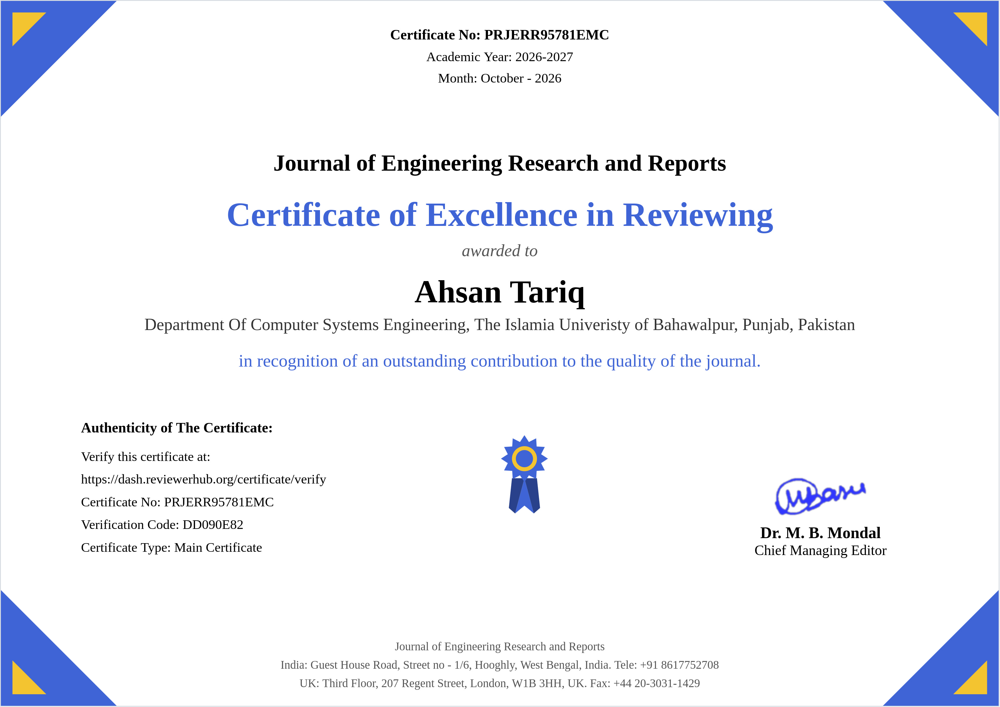
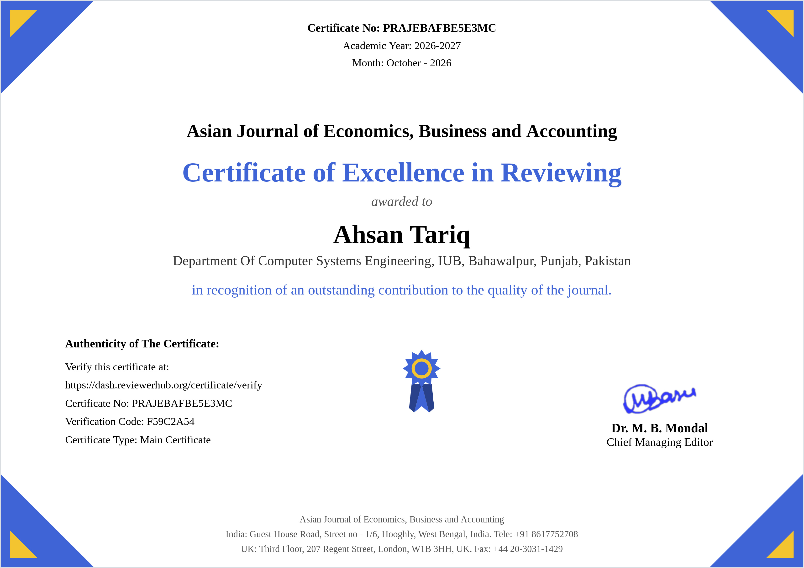
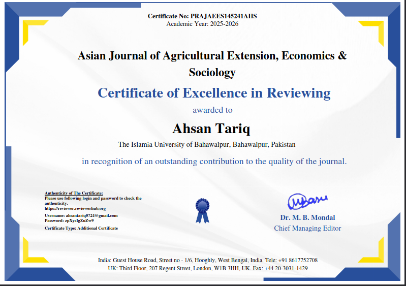
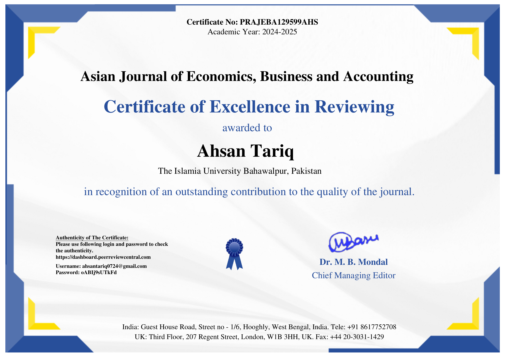

Ahsan Tariq
Founder of Ranbval & AI Systems Architect. Designing scalable, maintainable, and readable architectures that power autonomous multi-agent workflows, high-throughput data platforms, and zero-trust cryptographic infrastructure. Dedicated to disciplined zero-to-production engineering — transforming complex systems into resilient, fault-tolerant software built for real-world impact.
LeetCode
81 Problems Solved Algorithms & DSAKaggle Competitions
Expert Rank Top Solved ML SolutionsAcademic Peer Reviewer
5+ Journals · 1 Book WoS Verified ReviewsResearch Publications
6 Papers & Preprints JISRC · Zenodo DOIPyPI & npm Packages
11,500+ Downloads ranbval-sdk · emotion · isgcProduction Systems
20+ Systems Shipped B2B Enterprise & B2C AppsProfessional Summary
AI Product Builder, Systems Architect, and Founder of Ranbval — pioneering zero-trust cryptographic secrets vaults and intelligent multi-agent platforms. Proven track record of taking complex zero-to-production systems from concept to global delivery, driving high-impact solutions across both Enterprise B2B client architectures (multi-tenant ERP portals, real-time NetSuite synchronization, fleet telematics, and automated merchant lifecycle engines) and consumer-facing B2C applications (real-time avatar intelligence, automated video-to-shorts creators, and cross-platform mobile apps) for international clients across the US, UK, and Europe.
Deep engineering foundation rooted in Computer Systems Engineering, bridging Autonomous Robotics & Embedded Systems (ROS / ROS2 node architectures, sensor fusion, Byzantine-resilient perception) with modern Generative AI & LLMOps. Expert in orchestrating multi-agent state machines via LangGraph and LangChain, optimizing production LLM throughput using explicit Gemini context caching (slashing token latency by 85%), deploying hybrid dense/sparse RAG pipelines (Pinecone, MongoDB Atlas), and training deep computer vision models across PyTorch, OpenCV, and zero-shot CLIP.
Champion of disciplined engineering velocity and agile execution, seamlessly leading cross-functional development cycles through Jira, Trello, Linear, Asana, Monday.com, ClickUp, and Notion. Crafts high-throughput data platforms with live NetSuite ERP SuiteQL pipelines, Celery Beat schedulers, and Redis streaming mirrors feeding PostgreSQL 18. Architect of auto-scaling microservices on GCP Cloud Run, Docker multi-stage containerization, automated Cloud Build CI/CD, and repository-bound cryptographic token validation SDKs.
B2B & B2C Delivery
Enterprise ERP portals, merchant onboarding, SaaS, & consumer AI apps
Agile Project Management
Jira, Trello, Linear, Asana, Monday.com, ClickUp & Notion
Robotics & ROS / ROS2
Autonomous perception, ROS2 nodes, edge AI, & sensor fusion
Global Client Delivery
International clients across US, UK, Europe, & worldwide
International Clients & Companies
Built production-grade AI backends, vector search engines, and enterprise automations for international organizations across the United States and Latin America.
Experience
Proven track record across 22 engineering roles and client systems, specializing in multi-agent AI pipelines, enterprise workflow automations, and resilient backend platforms.
Enterprise Ops Portal — Cloud & ERP Systems Architect
- Architected multi-tenant portal on GCP Cloud Run — FastAPI (Python 3.12), Postgres 18 (Cloud SQL), nginx reverse-proxy — serving 37 modules across HR, Finance, Ops, and Compliance with async SQLAlchemy pooling and per-request upstream DNS resolution.
- Engineered live NetSuite ERP pipeline (source of truth) via Celery Beat + Redis — syncing employees, inventory, vendors, customers, POs, and sales orders across 10+ domains via SuiteQL into a read-optimized Postgres mirror.
- Integrated multi-system data layer with FleetGPS (real-time vehicle tracking, route optimization, driver telematics), PeopleHRIS (attendance, leave, payroll, employee lifecycle), and Trello (task boards, project workflows) for unified operational visibility across ERP, fleet, HR and PM systems.
- Built EOI Connector (AI Ops-Intelligence) — monitoring whitelisted WhatsApp groups and Gmail inboxes (including CC/BCC recipients) via secured webhooks; Claude LLM classifies each message into tasks, follow-ups, verifications, and 12+ risk-tiered alerts cross-referenced against NetSuite, FleetGPS, and PeopleHRIS data before surfacing to management in real time.
- 3-Layer OTP Security: email-verified 6-digit codes, 10-minute expiry, 3-attempt lockout, and server-side verification enforced on every sensitive approval.
- Integrated DocuSign REST API: multi-recipient e-signatures, real-time webhook status sync, embedded signing, resend controls, and dynamic signed PDF generation.
- Enterprise Auth & Microsoft Graph: Google OAuth 2.0 + Microsoft Entra ID auth (domain whitelisting, JWT HttpOnly cookies, remote revocation); MS Graph API (Mail.Read/Send) for mailbox, transactional email, and Outlook Calendar synchronization.
- CI/CD via Cloud Build + Docker: multi-stage builds, ARG secret injection, pre-commit gates (Ruff, Pylint, Bandit, Mypy, Safety, Pytest) — reducing deployment time from hours to minutes.
- Finance & Board Intelligence backend: P&L, Budget vs Actual, AR Ageing, 13-week Cashflow, BIR Tax Calendar, VAT-split Open Orders, IQVIA analytics, and executive State-of-Business KPIs from live NetSuite-synced data.
Automated Candidate Screening & Device Intelligence System
- Designed and implemented a multi-step candidate screening system that unifies application submission, resume upload, and voice-based interview questions into a single seamless form — overcoming JotForm's native platform limitations.
- Engineered a custom BAT-based automation that silently collects device and system information, then generates a dynamic auto-populated form link — capturing system-generated data alongside user-provided inputs without friction.
- Built a dual-form architecture to bypass JotForm's first-page-only data population constraint, maintaining full data continuity across multi-step flows.
- Implemented auto data mapping via unique email identifiers to reliably link candidate application data with device intelligence records.
- Delivered a system focused on scalability, real-time validation, and data consistency — demonstrating deep expertise in workflow automation and system design under platform constraints.
Chatbot Engineer — AI Sales Intelligence Backend
- Designed and shipped a fully automated client intelligence backend on N8n that gives sales reps an always-on, context-aware AI assistant for every prospect — without rebuilding context on every message.
- Implemented explicit LLM context caching via Google Gemini API's
/v1beta/cachedContentsendpoint — large static payloads (call transcripts, LinkedIn data, persona reports, CSR reports, action items, framework specs) are uploaded once; all subsequent queries reference the cache name directly, eliminating redundant token processing. - Built a 4-case cache routing engine: new session (create cache), expired cache (recreate), valid & unchanged (reuse), valid but changed (SHA-256 hash comparison → invalidate & recreate) — ensuring the LLM always has fresh data without unnecessary re-uploads.
- Engineered a single-query data hydration layer in Postgres pulling all client intelligence in one round-trip before any LLM call.
- Enforced a DB-level usage cap (75 messages per user-client pair) checked before any compute runs, keeping costs predictable at scale.
- Stateless workflow architecture enables horizontal scaling — heavy token processing offloaded to Google's infrastructure with no proportional compute overhead.
AI-Powered Video to Shorts Automation System
- Designed and developed an end-to-end AI-powered video processing pipeline that transforms long-form content into multiple short-form vertical videos (Shorts/Reels) with minimal manual effort.
- Built a scalable asynchronous backend using FastAPI and Celery, handling multiple concurrent video processing jobs without blocking system performance.
- Implemented a transcription-driven workflow that generates accurate, time-synchronized English subtitles — enabling context-aware clip segmentation rather than naive time-based splitting.
- Engineered a fully automated pipeline: segment long videos → convert to 9:16 vertical format → embed subtitles → generate platform-optimized titles and descriptions.
- Reduced manual editing effort by up to 90% through modular architecture separating ingestion, processing, and output stages — designed for extensibility toward automated publishing and AI-based highlight detection.
N8N Engineer — AI Persona, CSR & Action Item Analysis
- Automated client persona, CSR, and action item analysis — transforming raw LinkedIn inputs into actionable AI-driven reports with 90% reduction in manual analysis time.
- Integrated Scrapin.io API for LinkedIn profile and post scraping with resilient retry logic (up to 5 attempts, exponential backoff 15–60s) to handle rate limits gracefully.
- Orchestrated a multi-agent LLM pipeline (Gemini 2.5 Pro) evaluating 50+ psychological attributes across 5 behavioral layers (L1–L5), generating persona, CSR, and action item reports from transcripts and profiles.
- Implemented robust error handling (IF nodes for quota/attempt checks), JSON extraction, data flattening, and HTML/Markdown report builders for automated email delivery.
- Stored outputs in Supabase (clienttranscripts, actionitemhistory tables) with versioning (V1+), status tracking ("In Progress" → "Done"), and zero-downtime processing via webhooks.
- Applied FinOps discipline: cost-optimized API call patterns and failure-resilient architecture enabling scalable client onboarding.
AI Content Automation Architect — Autonomous Publishing System
- Designed and deployed a fully autonomous AI content production and distribution system that transforms a single keyword into 30+ SEO-optimized articles, multimedia assets, and multi-platform social posts — with minimal human intervention.
- Integrated modular AI agents: Topic Discovery, Atomic Page Planning, Draft Generation, QA Validation, Media Script Creation, Image Prompt Engineering, YouTube Publishing, WordPress REST API Publishing, Schema (JSON-LD) Injection, and Social Distribution via GHL.
- Implemented structured job orchestration with failure recovery logic ("Fix Needed" loop), concurrency control, database-driven tracking, and automated status progression from ideation through distribution.
- Delivered answer-first SEO architecture with programmatic internal linking, automated schema generation (Article, FAQ, VideoObject), media-script-to-video workflows, and Sitemap ping + indexing automation for Google & Bing.
N8N Automation Architect — Merchant Onboarding (Iris CRM)
- Architected a fully automated merchant lifecycle system with Iris CRM as the system of record and n8n as the central automation engine — covering lead intake, activation, training, compliance, and ongoing engagement.
- Built monitoring workflows that detect CRM lead creation/updates (status: "Statements Needed"), trigger statement request emails via SMTP, manage document uploads, and integrate with Iso Amp for processing statement analysis — writing results back to the CRM automatically.
- Engineered dynamic routing of merchant applications to processor systems (Paybright, Card Connect, Maverick, Defyne) with real-time approval/decline CRM status updates.
- Delivered recurring compliance automations: PCI reminders, follow-ups, training scheduling, equipment shipping logistics, and customer touchpoints — all orchestrated by n8n while Iris CRM remains the single source of truth.
Integration & Automation Engineer — Digital Operations Transformation
- Led the digital transformation of business operations by replacing fragmented manual processes with a fully automated, AI-driven system using Manus AI and n8n.
- Automated NetSuite data extraction and synchronization into centralized real-time workflows; converted Excel-based and paper-driven processes (including Combitas tools) into structured automated pipelines.
- Integrated DocuSign for digital signatures and verification, reducing approval turnaround from hours/days to minutes across multi-step approval chains.
- Built centralized vendor and product tracking with automated validations, routing, and notifications — eliminating procurement bottlenecks.
- Delivered a real-time operational dashboard for the founder with complete KPI visibility and audit-ready, scalable reporting.
Python & AI Automation Engineer
- Full-time Python and AI automation engineering role spanning multiple concurrent client projects across N8N, Gemini API, FastAPI, and intelligent workflow design — delivering production-ready systems for US-based clients from an on-site Pakistan location.
My Products
Architect and Founder of the Ranbval ecosystem — a multi-feature SaaS suite operating on a single secure root (ranbval.com) engineered with a vault-first architecture, verified cryptographic access, and zero-compromise security.
Ranbval Secret
Secure Secret Platform Migration & Encrypted API Key Infrastructure
Production-grade API secret & credential management platform that eradicates plain-text .env file leaks. Employs repository-bound cryptographically signed tokens, real-time request authentication SDKs, and a centralized issuance and live telemetry dashboard with zero application downtime.
Ranbval Health
AI Clinical Companion & End-to-End Encrypted Health Record VaultPatient-centric digital health vault providing zero-knowledge encrypted clinical histories, proactive symptom analysis, intelligent medication schedules, and AI-assisted medical record synthesis for doctors and emergency profiles.
Ranbval Social
AI Social Intelligence & Privacy-First Companion PlatformNext-generation social ecosystem combining relationship intelligence, multi-persona AI companions, encrypted media vaults, agent-coordinated gaming, and autonomous blackmail / harassment detection with zero-leak sharing.
Ranbval Discovery
Autonomous AI Research & Deep Scientific Knowledge DiscoveryAgentic research intelligence engine designed to autonomously read and synthesize academic papers, map citation graphs, pinpoint empirical contradictions, and discover interdisciplinary knowledge gaps for researchers.
Ranbval Conversations
Privacy-Preserving Multi-Modal AI Dialogue & Meeting IntelligenceZero-retention conversational platform featuring persistent long-term contextual memory threads, encrypted audio transcription, real-time action-item delegation, and isolated private LLM execution pipelines.
Ranbval Resume
Dynamic AI Interactive Resume & Portfolio Intelligence EngineAn interactive, verifiable candidate intelligence platform where recruiters and technical hiring teams converse directly with an AI candidate twin, query specific codebase implementations, and review cryptographically authenticated achievements.
Creative Work
AI Video to Shorts Automation Pipeline
FastAPI · Celery · FFmpeg · Whisper · Python
End-to-end asynchronous video processing system that transforms long-form content into platform-optimized vertical Shorts/Reels. Transcription-driven context-aware segmentation, auto-subtitle embedding, and AI-generated titles — reducing manual editing effort by 90%.
Automated Candidate Screening & Device Intelligence
JotForm · BAT Automation · Email ID Mapping · Multi-Step Forms
Dual-form architecture bypassing JotForm's native data population limits. A custom BAT automation silently captures device/system intelligence and generates an auto-populated form link. Unique email identifiers link candidate application data with system metadata for complete, consistent hiring intelligence.
Qira AI Module — Avatar Intelligence Backend
FastAPI · MediaPipe · OpenCV · Firebase · Google Cloud Run · JWT
Production-grade AI backend for facial landmark analysis (468+ points), bidirectional EN/RU translation, and high-speed TTS with intelligent caching. Deployed on Google Cloud Run; powers dynamic avatar matching and AI-human interaction at scale.
Zero-Touch Service Business Automation
N8N · Gemini · Housecall Pro API · OpenPhone · Twilio · Google Cloud
End-to-end automation ecosystem managing a service business from AI voice-to-lead intake across 6 channels, through LLM-driven estimating, tech dispatch, and automated invoicing — with revenue loops driving deposits and post-job reviews entirely without human intervention.
Iris CRM Merchant Onboarding Automation
N8N · Iris CRM · Iso Amp · SMTP · Paybright · Card Connect
Fully automated merchant lifecycle system with n8n as the orchestration engine and Iris CRM as the single source of truth. Handles lead intake, statement analysis, processor routing, compliance checks, training scheduling, and recurring engagement — zero manual handoffs.
Laptop Monitoring System
Python · OpenCV · smtplib
Security-focused Python application that captures user images at login via webcam using OpenCV, logs events, and sends email alerts through SMTP. Cross-platform (Linux, Windows).
Domains of Expertise
Proven cross-functional engineering specializations bridging autonomous robotics, AI automation systems, deep learning perception, high-throughput data platforms, and zero-trust cryptographic architectures.
Robotics & Embedded Edge AI
Architecting distributed edge perception networks, sensor fusion pipelines, and low-latency on-device intelligence for autonomous robotics and dynamic edge environments. Rooted in Computer Systems Engineering, experience spans ROS / ROS2 node pipelines, Byzantine-resilient multi-agent perception under severe natural domain shifts (adverse weather, fog, low-light), hardware-level IoT telematics telemetry (FleetGPS integration), microcontrollers, and real-time embedded model inference on power-constrained edge hardware.
AI Automation & Workflow Systems
Architecting autonomous zero-human-touch business ecosystems, multi-agent event orchestrations, and mission-critical enterprise RPA pipelines. Experienced in orchestrating high-reliability n8n workflows, Zapier automations, Voiceflow dialog agents, and custom webhook connectors integrating Housecall Pro, Iris CRM, DocuSign, Twilio/OpenPhone, and WhatsApp. Transforms complex multi-system operational loops—from lead qualification and AI quoting to automated dispatch and invoice settlement—into seamless, self-driving engines.
Computer Vision & Video Intelligence
Designing and deploying production spatial vision systems, real-time video intelligence pipelines, and automated media segmentation. Extensive hands-on implementations with zero-shot vision-language foundation models (CLIP), feature pyramid attention architectures, unsupervised industrial defect detection across MVTec AD, MediaPipe 468-point facial mesh tracking, OpenCV video stream processing, and published PyPI computer vision libraries (emotion-analysis).
Data Engineering & Streaming ETL
Engineering mission-critical enterprise data platforms, asynchronous ingestion pipelines, and resilient single-source-of-truth data mirrors. Engineered real-time NetSuite ERP data pipelines via SuiteQL extraction, Celery Beat schedulers, and Redis streaming mirrors across 10+ operational domains into read-optimized PostgreSQL 18. Proficient in distributed AWS Glue, S3 data lakes, async connection pooling, schema migrations, and multi-tenant data layer architectures.
Deep Learning & Neural Architectures
Developing, fine-tuning, and evaluating deep neural networks across PyTorch and TensorFlow for high-dimensional representation learning and pattern recognition. Specialized in vision transformers, deep convolutional neural networks, reconstruction autoencoders, attention mechanisms, and transfer learning workflows. Core contributions validated through peer-reviewed academic research published in JISRC and IEEE-indexed computer science venues.
Reinforcement Learning & Multi-Agent Systems
Formulating sequential decision-making policies, dynamic state-reward optimization loops, and distributed multi-agent coordination frameworks operating under stochastic uncertainty. Experienced in proxy-agent networks, game-theoretic negotiation protocols, trust-gated aggregation mechanisms, adversarial resilience against poisoning attacks, and self-directed agentic state machines built on modern graph runtimes.
Machine Learning & Predictive Analytics
Developing high-accuracy predictive models, statistical classification pipelines, and feature selection engines with strict mathematical rigor. Ranked Kaggle Expert with 81+ solved competitive problems; engineered novel ANOVA F-test statistical feature selection and variance-smoothed Gaussian Naive Bayes pipelines achieving 98.67% accuracy on benchmark intrusion distributions (UNSW-NB15) with minimal false alarms.
Generative AI, LLMOps & Agentic Systems
Engineering production enterprise Generative AI ecosystems, multi-agent orchestrations, and high-performance context architectures. Architected Claude 3.5 Sonnet ops-intelligence webhook pipelines, Gemini 2.5 Pro explicit context caching (/v1beta/cachedContents) to slash token latency by 85%, hybrid dense/sparse RAG vector pipelines (Pinecone, Atlas), and zero-human-touch autonomous service business automations.
NLP & Conversational Speech Systems
Building production speech-to-text intelligence, multilingual translation backends, and low-latency voice interaction systems. Deployed OpenAI Whisper transcription engines with context-aware segmentation, FFmpeg automated subtitle synthesis, bidirectional EN/RU neural translation pipelines, and high-speed text-to-speech (TTS) engines with intelligent memory caching deployed on Google Cloud Run.
Cloud Architecture & Distributed Microservices
Designing scalable, highly resilient containerized cloud infrastructures and automated CI/CD deployment pipelines on GCP, AWS, and Azure. Architected multi-tenant enterprise portals on GCP Cloud Run using FastAPI (Python 3.12), Docker multi-stage containerization, Nginx reverse-proxies, Cloud Build continuous delivery, per-request upstream DNS resolution, and auto-scaling asynchronous architectures.
Cryptographic Systems & Cybersecurity
Pioneering zero-trust secrets orchestration, repository-bound cryptographic token architectures, and automated runtime verification protocols. Founder and architect of the Ranbval cryptographic vault platform; engineered dual open-source runtime validation SDKs (PyPI & npm), 3-layer OTP authentication schemes, MS Entra ID SSO integrations, and high-precision Network Intrusion Detection Systems (NIDS).
Full-Stack AI Product Engineering
Delivering high-reliability end-to-end software products uniting robust backend microservices with responsive user interfaces and developer SDKs. Built multi-tenant enterprise operations portals serving 37 functional modules using FastAPI (Python 3.12) and Cloud SQL PostgreSQL, designed cross-platform React and React Native client applications, and published production-grade runtime verification packages on PyPI and npm registries.
Technical Skills
Production-tested tech stack, frameworks, and engineering tooling across AI systems, data architectures, and infrastructure.
Programming Languages
Generative AI & LLMOps
AI Automation & Integrations
Computer Vision & Speech AI
Deep Learning & Machine Learning
Robotics & Embedded Edge AI
Backend & Microservices
Data Engineering & Databases
Cloud & DevOps
Cybersecurity & Cryptography
Project Management & Agile
Freelancing Jobs

Vectorized Database Software Engineer
AI Email Intelligence project involving MongoDB Atlas Vector Search, LangChain, FastAPI, and RAG architecture for high-performance email response generation.

N8N Expert — Install & Use Crawl4AI
Setting up and configuring N8N with Crawl4AI for advanced web crawling and AI-driven data extraction automation workflows.
Research Projects
ANOVA F-Test Feature Selection for Machine Learning-Based Network Intrusion Detection on the UNSW-NB15 Dataset
Accepted for publication in the Journal of Independent Studies and Research Computing (JISRC - SZABIST) (Production Stage — ID: #429). Developed an accurate, computationally lightweight two-stage network intrusion detector (NIDS) utilizing ANOVA F-statistic ranking to select the top 15 features across binary and multi-class attacks. Attained 98.67% binary accuracy with variance-smoothed Gaussian Naive Bayes and 78.13% multi-class accuracy with Gradient Boosting, accompanied by federated learning privacy-preserving extensions.
 NIDS Architecture
NIDS Architecture
 98.67% Accuracy Scores
98.67% Accuracy Scores
 Multiclass ROC Curves
Multiclass ROC Curves
 Centralized vs Federated
Centralized vs Federated
Trust as a Gate, Not a Weight: Robust Federated Aggregation for Safety-Critical Perception under Natural Heterogeneity
Submitted to the Journal of Independent Studies and Research Computing (JISRC - SZABIST) (Under Active Peer Review — ID: #460). Addresses vulnerability in distributed safety-critical multi-agent perception (autonomous vehicles / edge robotics) under natural domain shifts (adverse weather, night) and Byzantine poisoning attacks using a novel hard trust-gating aggregation mechanism.
 Aggregator Accuracy vs Attacks
Aggregator Accuracy vs Attacks
 Perception Domain Shifts
Perception Domain Shifts
 Adaptive Attacker Defense
Adaptive Attacker Defense
 Non-IID Convergence
Non-IID Convergence
Three Paradigms, One Benchmark: A Negative-Result Study of Zero-Shot CLIP, Supervised FPN–Attention and Autoencoder-Based Defect Localisation on MVTec AD
Comprehensive empirical benchmark evaluating foundation zero-shot vision-language models (CLIP), supervised feature pyramid attention architectures, and unsupervised reconstruction autoencoders across all 15 industrial defect categories of MVTec AD.
 Fig 5: 15 Defect Categories
Fig 5: 15 Defect Categories
 Fig 1: Pipeline & Augmentations
Fig 1: Pipeline & Augmentations
 Fig 13: Localisation Heatmaps
Fig 13: Localisation Heatmaps
 Fig 11: ROC & AUC Metrics
Fig 11: ROC & AUC Metrics
Fuzzy Rough Nearest Neighbours Approaches for Emotion Detection in Tweets
Formulating granular computing and fuzzy rough set nearest neighbor (FRNN) classification frameworks to resolve boundary uncertainty and semantic ambiguity in short social media text. Shipped as the official open-source PyPI package emotion-analysis (v0.1.6) with 2,360+ downloads, integrating BERT & RoBERTa contextual transformer embeddings with Pearson Correlation Coefficient (PCC) benchmarking on SemEval affective datasets.
 Dataset Class Statistics
Dataset Class Statistics
 Joy Emotion Word Cloud
Joy Emotion Word Cloud
 Anger Emotion Word Cloud
Anger Emotion Word Cloud
 Sadness Emotion Word Cloud
Sadness Emotion Word Cloud
ISGC — A Python Package For Summarizing University Student Examination Performance
Published research paper & open-source Python framework (isgc) on PyPI and Zenodo (DOI: 10.5281/zenodo.12688032) with 1,725+ downloads. Designed an accurate numerical computing pipeline to calculate Semester GPA (SGPA) and Cumulative GPA (CGPA) according to official academic grading scales. Implements custom precision rounding functions, tabular transcript synthesis with tabulate, semester-wise SGPA progression trendline visualization, and remark distribution analytics across multi-tier grading criteria.
 SGPA Progression Plot
SGPA Progression Plot
 Remarks Distribution
Remarks Distribution
 Automated Tabular Output
Automated Tabular Output
 Official Benchmark Validation
Official Benchmark Validation
Reviewer Credentials

Journal of Engineering Research and Reports
Cert No: PRJERR95781EMC
Awarded for rigorous peer-review evaluation of cloud-native systems and continuous platform migration architectures.

Asian Journal of Economics, Business and Accounting
Cert No: PRAJEBAFBE5E3MC
Awarded in recognition of outstanding contributions to evaluating warehouse automation and storage technologies.

Asian Journal of Agricultural Extension, Economics & Sociology
Cert No: PRAJAEES145241AHS
Recognized for critical scientific peer review regarding perceived constraints in green product adoption.
Asian Journal of Economics, Business and Accounting
Cert No: PRAJEBA145968AHS
Awarded for high-standard review contributions evaluating enterprise growth and fiscal policies.

Asian Journal of Economics, Business and Accounting
Cert No: PRAJEBA129599AHS
Awarded for rigorous peer-review evaluation on youth credit enhancement and financial risk modeling.
Publications & Research Papers
Two-stage network intrusion detector (binary attack vs normal + multi-class attack category classification) on the UNSW-NB15 benchmark. ANOVA F-statistic ranking selects the top 15 features, attaining 98.67% binary accuracy with variance-smoothed Gaussian Naive Bayes and 78.13% multi-class accuracy with Gradient Boosting, alongside privacy-preserving federated learning architectural extensions.
Safety-critical distributed perception in autonomous systems under natural domain shifts (night, adverse weather) and Byzantine adversarial poisoning attacks. Introduces a hard trust-gating aggregation mechanism that outperforms classical soft-weighting aggregators (FedAvg, Krum, Trimmed Mean, FLTrust).
Cloud-native cryptographic infrastructure designed to permanently prevent plaintext `.env` secret leaks in distributed systems. Formulates repository-bound asymmetric encryption with secure in-memory injection and zero-knowledge developer access control.
Automated academic computing and performance summarization Python framework (isgc). Formulates precision floating-point rounding functions, tabular transcript synthesis with tabulate, semester-wise SGPA progression line plots, and remark distribution analytics across multi-tier grading criteria.
Empirical benchmark evaluating zero-shot foundation models (CLIP), supervised feature pyramid attention architectures, and unsupervised reconstruction autoencoders across all 15 industrial defect categories of MVTec AD.
Granular computing and fuzzy rough set nearest neighbor (FRNN) classification frameworks to resolve boundary uncertainty and semantic ambiguity in short social media text for multi-class emotion detection (Joy, Anger, Sadness, Fear). Shipped as the open-source PyPI package emotion-analysis (v0.1.6) with 2,360+ downloads, integrating BERT & RoBERTa contextual transformer embeddings with Pearson Correlation Coefficient (PCC) benchmarking on SemEval datasets.
Education
B.S. in Computer Systems Engineering
The Islamia University of Bahawalpur, Pakistan 2020 – 2024Awards & Certifications
- PMYP Laptop Scheme Selection (Merit)
- Data Analysis With Python (FreeCodeCamp)
- Intro to SQL, ML, Feature Engineering (Kaggle)
- Data Mining And Business Intelligence (Navttc)